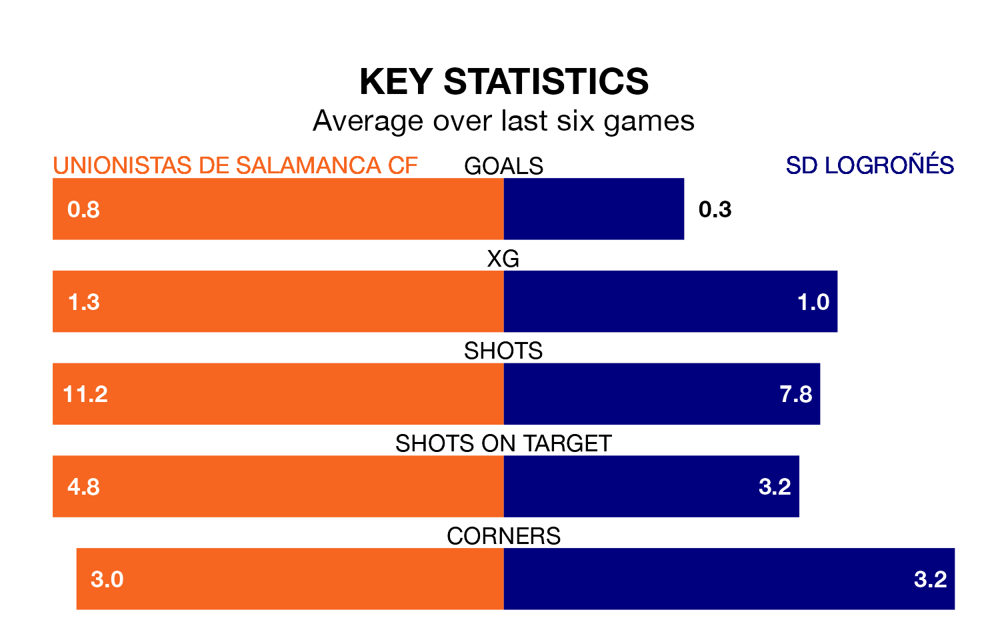

Unionistas de Salamanca CF host SD Logroñés on Saturday at Pistas del Helmántico in Primera Division RFEF Group 1.
In their last league match, on Sunday, Unionistas de Salamanca beat Gimnàstic de Tarragona 1-0 away, with their goal scored by Mario Losada Laguna.
Logroñés drew, 1-1 at home against Real Unión on March 23, with Antonio Jesús Salado Góngora scoring their goals.
Logroñés are 19th in the table after 29 games, of which they have won seven and drawn five, earning 26 points.
Unionistas de Salamanca are nine places ahead of the away team in 10th, with nine wins and 12 draws putting them on 39 points.
The hosts are in mixed form in Primera Division RFEF Group 1, with two wins and two draws from their last six games.
With a win and two draws over that period, Logroñés's form is worse – they have taken five points from 18, compared to Unionistas de Salamanca's eight.
In the last three years, Unionistas de Salamanca and Logroñés have played each other on three occasions. They won one each, and they drew once.
Their last meeting was on October 7, when Unionistas de Salamanca won 1-0 away.
With 21 goals in 29 games so far this season, Logroñés are the league's joint-second-lowest scorers with 0.7 goals per game. And they are conceding more than average, letting in 43 goals at a rate of 1.5 per game.
Unionistas de Salamanca are also below average scorers, with 0.8 goals per game, compared to a league average of 1.0. They have also conceded 0.8 goals per game.
Updated: 12:39 (UTC), 26/03/24